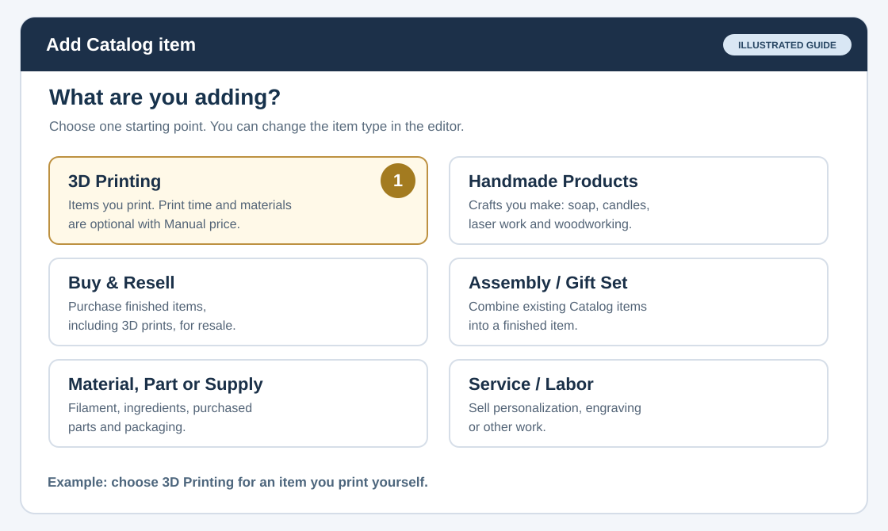

Add your first Catalog item
Create an item in five steps. Use Practice to try it without changing real Business data.
Images: These are interface illustrations, not actual app screenshots.
Before you begin
Choose Practice — Sample Data or Practice — Blank. The example item name and price are fictional.
1. Open Catalog
Open Catalog → + Add. The chooser asks What are you adding?
2. Choose what you're adding
Select 3D Printing for an item you print yourself. Other choices include Handmade Products, Buy & Resell, Assembly / Gift Set, Material, Part or Supply, and Service / Labor.

3. Complete Required fields
- How do you obtain this item? — choose I print / make it.
- Item type — 3D Printed Item.
- Item name — enter a name.
- Manual price — enter a Selling price.
Fields marked Required need values. Optional fields can be left blank.

4. Add optional details
Open Costing, Inventory or Additional details if needed. Cost + markup may require Filament / Material and print time; Manual price does not.

Choose Choose or create category or leave No category. Type and Category are different.

5. Save Item
Select Save Item. To enter stock, first save the item, then use Receive, Use, Adjust or Build.
Other items
Buy & Resell uses the cost of the purchased finished item, not your printer time. Assembly / Gift Set requires existing Catalog components. Category remains optional.
On iPhone
The same workflow applies. Scroll within the editor to reach optional sections and Save.